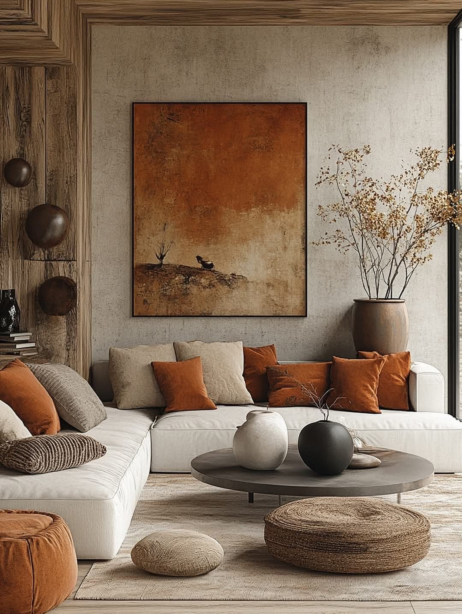
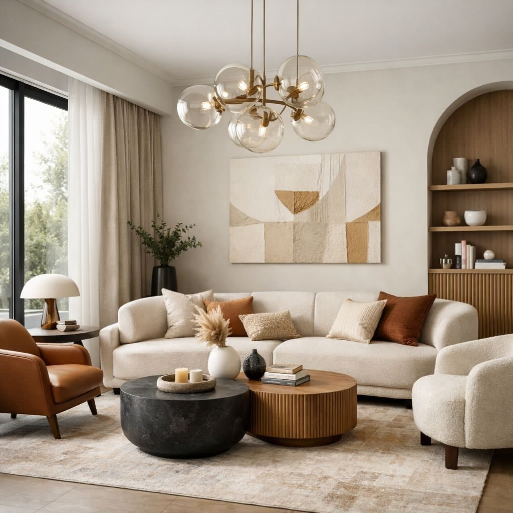

Start
Konsultacja i poznanie potrzeb
Rozmawiamy o stylu życia, przyzwyczajeniach, inspiracjach, budżecie i zakresie współpracy. To etap, który pozwala dobrze określić kierunek projektu.
Proces współpracy
Projektowanie to nie jednorazowa decyzja, ale przemyślany dialog. Na każdym etapie porządkujemy potrzeby, sprawdzamy możliwości przestrzeni i dopracowujemy rozwiązania, które mają być piękne, funkcjonalne i realne do wykonania.

czytelny proces, jasne decyzje i spójny kierunek projektu
Najpierw słucham i analizuję. Dopiero później projektuję. Dzięki temu finalna koncepcja nie jest przypadkową kompozycją ładnych elementów, tylko odpowiedzią na sposób, w jaki naprawdę chcesz mieszkać, pracować i odpoczywać.
Etapy projektu
Każdy etap ma swoje zadanie: od poznania potrzeb, przez funkcję i styl, aż po wizualizacje oraz dopracowanie detali. Dzięki temu łatwiej podejmować decyzje bez chaosu.
Start
Rozmawiamy o stylu życia, przyzwyczajeniach, inspiracjach, budżecie i zakresie współpracy. To etap, który pozwala dobrze określić kierunek projektu.
Analiza
Sprawdzam proporcje wnętrza, funkcje pomieszczeń, komunikację, przechowywanie oraz elementy, które warto poprawić lub podkreślić.
Funkcja
Powstaje funkcjonalna baza projektu: rozmieszczenie stref, mebli, najważniejszych elementów i rozwiązań, które mają ułatwiać codzienne korzystanie z wnętrza.
Nastrój
Dobieramy klimat wnętrza: kolorystykę, materiały, faktury, światło, formy mebli i detale, które budują charakter całej przestrzeni.
Wizja
Przygotowuję realistyczny obraz projektu, dzięki któremu możesz zobaczyć efekt przed realizacją i spokojnie ocenić, czy wszystko idzie w dobrym kierunku.
Finał
Otrzymujesz spójną wizję wnętrza, która ułatwia dalsze decyzje zakupowe, wykonawcze i organizacyjne.

Co otrzymujesz?
Celem współpracy jest stworzenie jasnego kierunku dla Twojego wnętrza. Otrzymujesz nie tylko estetyczną wizję, ale też przemyślane rozwiązania, które pomagają uniknąć przypadkowych zakupów i niepotrzebnych zmian w trakcie realizacji.
Zasady współpracy
Wiesz, na jakim etapie jesteśmy i jaki jest cel kolejnych decyzji.
Każdy materiał, kolor i element wyposażenia ma wynikać z całościowej koncepcji.
Piękno wnętrza łączę z wygodą, proporcjami i praktycznym użytkowaniem.
Pierwszy krok
Napisz, czego potrzebujesz, co chcesz zmienić i jaki efekt chcesz osiągnąć. Od tego zaczniemy budować spokojny, uporządkowany proces projektowy.
Przejdź do kontaktu